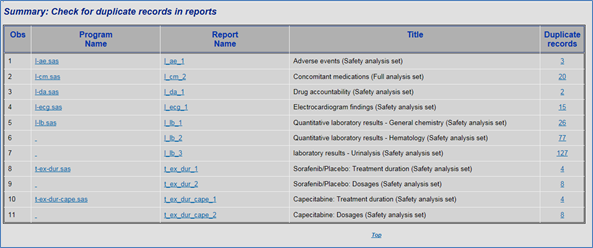

3 Document
3.1 Check for discrepancies in CSR tables and listing reports.
3.2 Purpose / Short Description of CRV
Check for discrepancies in CSR tables and listing reports.
4 User Requirements
Check for reports with undefined titles
Check for missing footnote references
Check for duplicate records in reports
Check report creation dates
Compare program file names against NAME parameter in %iniprog call
Check for empty reports
Check for missing %iniprog and/or %endprog calls
Check SAS log files
Check AE reports for discrepancies
Check Big N within each population group
Check for hardcoded libnames and formats
Check for reports with invalid values
Run study specific checks
4.1 Program / Tool / Macro Parameters
The options for CRV_CHECK are provided to the macro through parameters. For a specification of the possible parameters and values for the options, refer to the following table. The effect and possible values of the options are described in the respective specifications below. Note that if any of the required parameters is not used appropriately, the macro will terminate with an error message.
| Parameter | Default | Description |
|---|---|---|
| LIB | TLFMETA | Library reference pointing to %datalist metadata |
| METADATA | META | Metadata dataset(s) for stored %datalist metadata |
| CHECK1 | Y | Check for reports with undefined titles |
| CHECK2: | Y | Check for missing footnote references |
| CHECK3: | Y | Check for duplicate records in reports |
| CHECK4: | Y | Check report creation dates |
| CHECK5: | Y | Compare program file names against NAME parameter in %iniprog call |
| CHECK6: | Y | Check for empty reports |
| CHECK7: | Y | Check for missing %iniprog and/or %endprog calls |
| CHECK8: | Y | Check SAS log files |
| CHECK9: | Y | Check AE reports for discrepancies |
| CHECK10: | Y | Check Big N within each population group |
| CHECK11: | Y | Check for hardcoded libnames and formats |
| CHECK12: | Y | Check for reprots with invalid values |
| CHECKX: | N | Run study specific check(s) |
| REPORT_TYPE | HTML | Store the result files in RTF or HTML (default) format, or ALL to produce both files |
| COLORS | #ff4d4d|#dbb43d | Color to use for flagged records in reports 1st color in the list is used for the failed checks. 2nd color in the list is used for the TBD checks. |
| KEYWORD | UNIDENTIFIED | Optional text string to identify missing titles |
| FIRSTOBS | 1 | Used to limit the number of reports to check. It specifies first observation to process. |
| OBS | MAX | Specifies the last observation to process. |
| SEARCH_COLUMN_HEADER | Total | Select a column header to search |
| TIMING_WINDOW | 21600 | Allowed time interval between report creation dates, in seconds; the default is 6 hours |
| FILEFILTER | .* | Filter for file names to include in validation report; must be a valid regular expression |
| HELP | N | Display the CRV help messages |
| VERBOSE | N | Print additional information into SAS log |
4.1.1 LIB
This is the SAS library reference points to the location of %datalist metadata directory. Refer to %startMostoMetadata documentation for instruction on how to create one. Following diagram is an overview of how metadata is created:
4.1.2 METADATA
This is the SAS dataset, or list of SAS datasets, in LIB library that contain the list of reports with the associated %datalist parameters used to create them. The default value of “META:”, for example, includes all dataset names beginning with “META”.
4.1.3 CHECK1
Check for reports with undefined titles:
A report is considered having an undefined title if TITLE1 is missing or contains &KEYWORD. The default for the parameter KEYWORD is “UNIDENTIFIED”.
Sample Detail check for reports with undefined titles:
4.1.4 CHECK2:
Check for missing footnote references
The search for possible footnote related issues includes the following:
· Column references without a matching footnote
· Row references without a matching footnote
· Row header reference without a matching footnote
· Value reference without a matching footnote
· Footnote without the corresponding reference
Refer to Appendix B: for detail.
4.1.5 CHECK3:
Check for duplicate records in reports
This is about identifying duplicate rows in the reports.
Refer to [APPENDIX C:] for detail.
4.1.6 CHECK4:
Check report creation dates
If the gap between report creation date and that of the most recent report is greater than &TIMING_WINDOW seconds, the report is flagged.
Sample report:
4.1.7 CHECK5:
Compare program file names against NAME parameter in %iniprog call
The report is flagged if NAME parameter in %iniprog call does not match the file name.
Sample report:
4.1.8 CHECK6:
Check for empty reports
All reports that contain no data are flagged.
Sample report:
4.1.9 CHECK7:
Check for missing %iniprog and/or %endprog calls
SAS programs are scanned for presence of %iniprog and %endprog calls. Reports that do not contain either of them are flagged.
For Example:
Note: ACL Owner column indicates the Unix ownership of the file. It is the output of the “ls –la” command.
Columns Purpose, Author, Last Changed By, and Validation Level are the text retrieved from the program’s header.
4.1.10 CHECK8:
Check SAS log files
SAS log files are scanned for presence of ERRORs, WARNINGs and critical NOTEs. Reports are flagged if any such lines are detected.
Sample Report:
4.1.11 CHECK9:
Check AE reports for discrepancies
Check numbers among AE Summary, Overall and Listing reports.
AE reports are grouped to the following categories:
Population Set: safety analysis set, full analysis set, intent-to-treat, per-protocol,….
Timing Method:_all_, Treatment Emergent, Cutoff, After, Before, Between, Phase, Pre/Post treatment, Page Title
Scope: Any AE, SAE, Severe, Related, SAE, Discontinuation, non-Serious
Dictionary:MedDRA, CTCAE, MedDRA/CTCAE, not specific is default to MedDRA
Reported numbers between each group has to match.
4.1.12 CHECK10:
Check Big N within each population group
Check reports for discrepancies in reporting Big N for various populations. Reports that their Big N do not match within a population are flagged.
Sample HTML detail report using SAS 9.4:
4.1.13 CHECK11:
Check for hardcoded libnames and formats
Check for hardcoded libnames and formats. SAS programs are scanned for presence of LIBNAME and PROC FORMAT words. Reports that contain either of them are flagged.
Sample HTML detail report using SAS 9.4:
4.1.14 CHECK12:
Check for reports with invalid values
Check for reports with invalid values.
For example:
1. Check for UNCODED! fields.
2. in case Taiwan is used in a Table, the following two checks are applied: a.) If Country is used, it should always be “Country / Region”. This is also required for all titles and footnotes.
b.) In no case the term “Province of China” should be used in combination with Taiwan
Both checks are required to ensure we apply to all requirements for submissions in China and Taiwan.
3. Check for reports with invalid value of “&”.
Sample HTML summary report using SAS 9.4:
4.1.15 CHECKX:
Run study specific checks
The default for this parameter is NO. When it is changed to YES, macro %CRV_CheckX0 is executed if it is defined. The macro is expected to contain study-specific checks.
4.1.16 REPORT_TYPE
This parameter determines whether the output is stored in HTML or RTF formats, or both if it is set to ALL (default).
4.1.17 FILEFILTER
This parameter defines a regular expression to subset specific reports. The default is “.*”, which selects every existing report.
4.1.18 COLORS
This parameter defines the colors used for flagged records in the reports. The default is set to Orange|Yellow.
1st color in the list used for the failed checks. 2nd color in the list is used for the TBD checks.
4.1.19 KEYWORD
Optional text string to identify missing titles. A report is considered having an undefined title if TITLE1 is missing or contains &KEYWORD. The default for the parameter KEYWORD is “UNIDENTIFIED”.
4.1.20 FIRSTOBS
It is used to limit the number of reports to check. Because of memory issue, we may need to limit the number of reports to check. It specifies the first observation to process.
4.1.21 OBS
It specifies the last observation to process. When FIRSTOBS is not also used, this corresponds to the number of observations that will be read. The default value is set to Max.
Following is an example of selecting only the 5000 reports:
%crv_check(obs=5000)
4.1.22 SEARCH_COLUMN_HEADER
This parameter defines a column header to search. The default is “Total”, which select columns with the header of “Total”.
4.1.23 TIMING_WINDOW
This parameter sets maximal time span, in seconds, allowed between individual reports. The default value is 21600, which is an equivalent of 6 hours.
4.1.24 HELP
The default for this parameter is NO. When it is changed to YES, help text is printed to the SAS log.
4.1.25 VERBOSE
The default for this parameter is NO. When it is changed to YES, general messages (including starting and finishing information) are printed to the SAS log. With the default setting, only ERROR and WARNING messages are printed.
4.1.26 Checks and Error Handling
The following checks and error handlings are performed.
| Type of check | Object | Descriptions | Message / Reaction |
| FORMAL | LIB | Must be a valid existing library | Abort with an error message |
| FORMAL | METADATA | Must be existing dataset(s) (also in combination with INLIB if provided) | Abort with an error message |
| FORMAL | LIB METADATA | LIB and METADATA must not be both missing | Abort with an error message |
| FORMAL | REPORT_TYPE | Must use HTM, RTF or ALL | Abort with an error message |
| FORMAL | CHECK1-CHECK12 | Must either be N(O) or Y(ES) | Abort with an error message |
| FORMAL | CHECKX | Must either be N(O) or Y(ES) | Abort with an error message |
| FORMAL | FIRSTOBS | Must be a valid integer number. Cannot be empty. | Abort with an error message |
| FORMAL | OBS | Must be a valid integer number. Cannot be empty. | Abort with an error message |
| FORMAL | TIMING_FLAG | Must be a NUMERIC | Abort with an error message |
| FORMAL | HELP | Must either be N(O) or Y(ES) | Abort with an error message |
| FORMAL | VERBOSE | Must either be N(O) or Y(ES) | Abort with an error message |
4.1.27 Processing Steps
CRV_check macro relies on the datalist metadata to identify discrepancies in the tables and reports. To create datalist metadata for a study, add the following lines to your run_all.sas program:
%initsystems(initstudy=5)
%initstudy(…….)
%startMostoMetadata()
4.1.28 Output Generation
Based on the REPORT_TYPE parameter, CRV_Check macro generates an .HTM and/or a .RTF file(s) that includes the results from all the checks.
Example:
Clicking of the “Obs” number, detail report of the selected check will be displayed. Clicking on the “Status” column, summary report of the selected check will be displayed.
To generate the above report, run the %crv_check macro at the end of your run_all.sas program.
Or, you may also want to create a separate run_crv file to generate the report.
For example:
%initsystems(initstudy=5, spro=3, crv=2)
%initstudy()
%crv_check;
4.1.29 Status
Status field has the following options: Passed, Failed and TBD (To-Be-Determined).
• Passed: I know the values are correct.
• Failed: I know the values are incorrect.
• TBD: I don’t know if the values are correct.
For some checks, by checking, I know that the values are correct or not. Passed or Failed. Checks like looking for missing titles. Titles are there or not? Yes or No
Some checks like check#3, find duplicate records, it totally depends on the report. You can easily find duplicate records in the demography report. But in the death report, you don’t want to find duplicates.
TBD is for those cases where the program cannot figure whether something is correct or not, so they need to be checked visually.
Following is a list of valid status values for each check:
Default colors associated with status values are:
Within the CRV reports, there are default colors associated with these values: Yellow for “TBD”, Orange for “Failed”, default SAS background color for “Passed”. When running CRV in SAS 9.2, default background color is “Gray”. Running it with SAS 9.4, default background color is “White”.
You can change these default colors with the use of CRV macro parameter.
4.1.30 Constraints
If your study has multiple runall programs, and you want to run them all at the same time, you need to specify a unique metadat parameter for the %startMostoMetadata macro.
For Example:
%startmostometadata(metadat=tlfmeta.META_Section14);
%startmostometadata(metadat=tlfmeta.META_Section16);
4.1.31 %DocumentFinish
Following are the steps for storing the crv_check findings to a MS-Word document:
1. Copy the
\\by-sas2p.bayer-ag.com\patdb\std_sg\stat\systems\crv\doc\crv2\template_crv_check.doc file to your study .pgm directory.
2. Update the template_crv.doc header information.
3. Add the following line to your runall program:
%DocumentFinish(template=template_CRV_check.doc, tmpldir=&prgdir, _outdir=&outdir, ResultPrefix= )
Sample CRV_Check.doc file:
4.1.32 3.Appendix A:
overall report structure
Following is the overall structure of the html file generated by the CRV_CHECK:
|
Following is the overall structure of the .Rtf file generated by the CRV_CHECK:
|
4.1.33 Appendix B:
Examples of footnote reference issues
Following is a sample summary report that shows reports with a number of duplicate records.
For example, in the first row, it shows we have three duplicate AE records.
Clicking on the number 3 in the duplicate records column will display the duplicate records.
Example of checking for duplicate records in a report:

By clicking on the report name on the last line, it will take you to the report.
Following is the snapshot of the actual report, with its duplicate records.
When running a check against a study that includes the above report, this discrepancy will be identified.
First row in the following summary report shows there are three duplicate AE records. Clicking on the number “3” in the duplicate records column will display the three duplicate records.
Following report indicates three separate duplicate records in the AE listing.
Clicking on the report name on the last line will display the actual report.